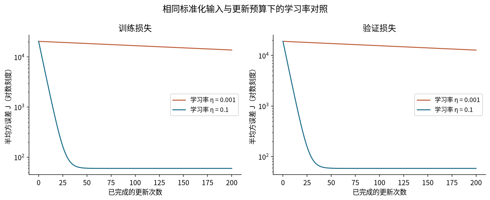
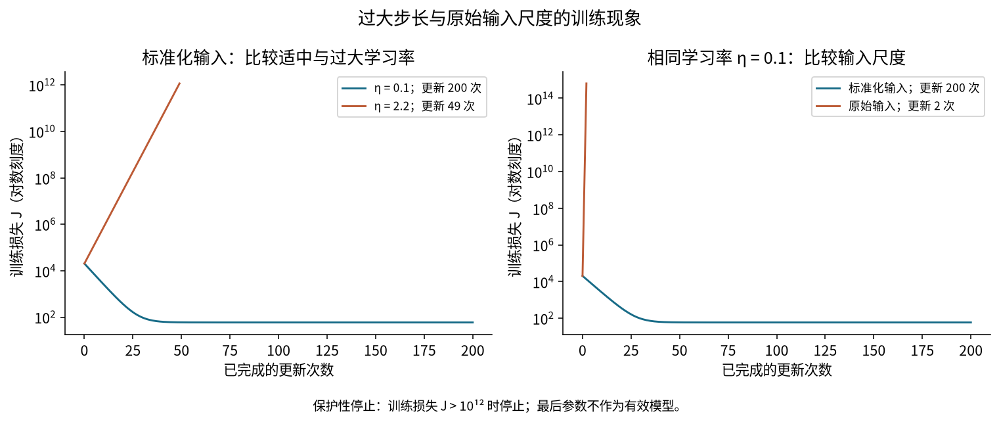

梯度下降、学习率与尺度
T04 · 机器学习 · 共同理论 · 2学时
从参数试探走到系统更新
01计算预测使用当前参数
02汇总损失比较训练标签
03计算梯度判断局部变化
04更新参数控制方向与幅度
05核对结果重复并检查训练
- 手算一次同步更新。
- 用曲线解释学习率与尺度的影响。
- 区分训练进展和验证表现。
平均变化率怎样提示方向？
从 移到 ，函数值由 4 变为 3.61：
负值说明：在这段移动中，平均而言，参数增大时函数值减小。
导数描述当前位置附近的变化
|
位置
|
导数
|
降低函数值的局部调整
|
|
|
负
|
略微增大
|
|
|
正
|
略微减小
|
导数绝对值描述函数值对参数局部变化的敏感程度。
两个参数，分别观察局部变化
损失 同时依赖两个参数。
- 固定 ，观察 的变化：。
- 固定 ，观察 的变化：。
固定其他参数，对一个参数求出的变化率，称为偏导数。
按参数顺序组织偏导，得到梯度。
梯度分量对应参数，不对应样本
无论有 3 个还是 80 个训练样本，本章只有 两个参数。
- 每个样本有一个残差。
- 梯度有两个分量，分别对应两个参数。
梯度非零时，沿负梯度移动足够小的一步，可以降低当前损失。
梯度为零表示一阶变化率为零；是否最优还要结合函数性质判断。
先追踪单个样本的计算路径
参数 → 残差 → 半平方项
训练样本 保持不变。整条路径的变化率由两层变化率相乘得到。
这里的 抵消平方求导产生的系数 2。
斜率多乘输入，截距不需要
因此：
改变截距，各预测移动相同数值；改变斜率，移动量与输入有关。
对全部训练样本取平均
两个梯度都在同一组当前参数上计算，都是标量。
平均残差在这里用于判断截距调整方向，不用于衡量总体误差大小。
若目标改为 MSE，两项梯度都会加倍；最优参数集合不变。
先手算两个梯度
已知预测 、残差 。
求 和 。先独立算，再进入下一页。
梯度核对：两个平均值
负梯度方向使两个参数都增大，但还需要决定移动幅度。
学习率决定这一步的幅度
设学习率 ：
- 减号使参数沿负梯度方向移动。
- 在同一个梯度上，学习率越大，参数移动越远。
- 学习率是训练设置，不是预测式中的参数。
一次同步更新，先写自己的结果
旧参数 ，梯度 ，旧损失 。
- 计算两个新参数。
- 用新参数重新计算预测与残差。
- 计算新损失，判断是否下降。
两个梯度应在更新前还是更新后计算？
更新后的损失确实下降了吗？
改善了当前训练拟合；新参数还不是零损失参数 。
同步指的是计算依据一致
旧参数 → 预测与残差 → 两个梯度 → 两个新参数 → 重新计算损失
- 两个梯度先由旧参数算好，再先后赋值，不违反同步更新。
- 若更新 后重新计算 ，两个偏导来自不同参数位置。
教师演示：方向相同，步长不同
保持数据和初值不变，将 eta 从 0.1 改为 2，先预测损失会怎样变。
核对： 时 ； 时 ，高于原来的 。
局部方向正确，也可能跨过最低点
回到 ，从 出发，导数为 。
|
学习率
|
新位置
|
新函数值
|
|
0.1
|
1.4
|
2.56
|
|
2
|
9
|
36
|
参数都沿负导数方向移动，但过大的一步越过最低点对应位置，损失反而上升。
在固定条件下观察两种学习率

相同标准化输入与更新预算下的学习率对照
相同数据、标准化、初值 与 200 次更新；只改变学习率。
纵轴为对数刻度：同样的竖直距离表示相同的倍数变化。
用训练统计量建立新坐标
这里的 只由训练输入计算，标准差分母为训练样本数。
先减去均值，再除以标准差； 时不能直接相除。
验证输入沿用训练坐标
纸笔 B4 · 训练输入 ，验证输入
先算训练均值、标准差，再算验证点的新坐标。
；训练坐标 ，验证坐标 。
不能另用验证统计量建立另一坐标，也不能先合并数据再估计训练变换。
坐标改变，参数数值也会改变
若 ， 等价于 。
在 上，两种写法都预测 11。比较预测，或先转换坐标，再比较参数。
过大步长与原始输入可能提前停止

过大步长与原始输入尺度的训练现象
读清图例中的实际更新次数，不能把提前停止当成完成预算。
保护条件：损失非有限或 时停止；这不是收敛判据。
损失下降，还要问训练是否充分
| 梯度下降，，200 次更新 |
165.819 |
159.563 |
| 梯度下降，，200 次更新 |
10.912 |
10.817 |
| 训练均值基线 |
56.672 |
67.555 |
| 训练最小二乘参考 |
10.912 |
10.817 |
小学习率尚未充分优化，不能据此宣布线性模型不适合数据。
训练进展和验证表现回答不同问题
- 训练参考：当前参数是否接近同一训练目标的较优结果？
- 验证结果：在这些未参与梯度计算的对象上预测得怎样？
- 独立最终检查：方案确定后，在未参与本轮选择的数据上检查。
用验证结果比较候选后，不能将这些成绩改称最终测试表现。
今天建立了一个完整更新过程
预测 → 损失 → 梯度 → 同步更新 → 重新检查
- 梯度描述局部变化，学习率决定幅度。
- 标准化改变参数坐标和优化条件，不保证泛化提高。
- 固定数据、初值、损失和预算，才能归因比较。
下一讲：预测类别时，输出和损失会怎样改变？
离堂检查：负梯度能保证什么？
某点 ，梯度下降应使 增大还是减小？
为什么不能据此保证任意大的学习率都能降低损失？